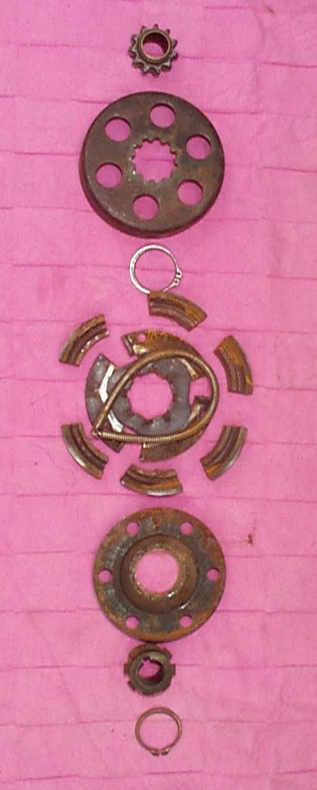

Step-through commuters without a clutch lever use an automatic clutch: a centrifugal part that grips as revs rise, plus a clutch that the gear pedal releases while you press it. Faults show as slipping (revs rise but the bike is slow in every gear), a lurch or bang when you change gear, creeping at idle, or a jerky take-off. Start with oil, idle speed and how the pedal is used. Internal clutch work is a workshop job.
Is it safe to ride?
Ride with care. A lurch when selecting a gear can push you into a junction, and slipping leaves you short of power when pulling out. Hold the brakes when changing gear at a standstill.
Quick checks first
- Check the engine oil level; on most step-throughs the clutch runs in it.
- Listen to the idle: is it faster than usual?
- Close the throttle fully before each gear change and press the pedal through its full travel.
- Check the gear pedal is not bent and does not touch the footpeg.
- Many step-through bikes have a small lever on the gear shaft that fully frees the clutch while the gear is changed. Check that the lever and its linkage are not bent or loose.
- Automatic clutches use weights that press plates together (plate type), or spring-held shoes that swing out against a drum (shoe type). In both, worn plates, shoes or springs are replaced, not adjusted.
Diagnose it step by step
1Is the oil level correct, and is the oil fresh and of the grade in your manual?
- No: Check the engine oil level; if old or of unknown type, Change the engine oil.
- Yes: go to step 2.
2Is the idle speed too high, or does the bike creep and lurch only when a gear is selected at idle?
- Yes: a high idle makes the centrifugal clutch grip at idle. See Idle speed is too high; on carburettor bikes Adjust carburettor idle speed and mixture.
- No: go to step 3.
3Does the jerk happen when you change gear with the throttle still open, or with a quick tap on the pedal?
- Yes: close the throttle fully, press the pedal firmly through its whole travel, hold briefly, then release smoothly and open the throttle.
- No: go to step 4.
4Does the gear pedal move its full stroke freely and spring back, without slack on its shaft?
- No: Check the gear lever and shift linkage.
- Yes: go to step 5.
5Does it still slip in every gear, or engage roughly, after steps 1 to 4?
- Yes: the external clutch adjuster may be out of setting, or the shoes, plates or springs are worn. Go to Check a semi-automatic or centrifugal clutch. Only change the adjuster with your manual's exact steps.
What happens if you ignore it: a slipping automatic clutch overheats the oil and wears faster, and rough engagement hammers the gearbox dogs.
Causes, most likely first
| Cause | How to confirm | Fix |
|---|---|---|
| Low, old or wrong oil | Level low, dark, unknown grade | Change the engine oil |
| Idle too high | Creeps or lurches at idle in gear | Idle speed is too high |
| Riding technique | Jerk only with throttle open or quick pedal taps | Close throttle, full pedal stroke |
| Pedal or linkage play | Pedal loose, bent or short of travel | Check the gear lever and shift linkage |
| Adjuster out of setting | Changes after adjuster set per manual | Check a semi-automatic or centrifugal clutch |
| Worn shoes, plates or springs | Persists after all the above | Check a semi-automatic or centrifugal clutch |